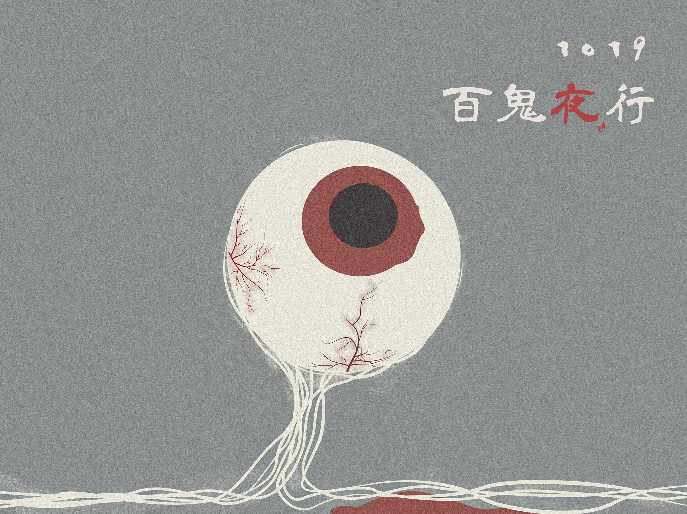
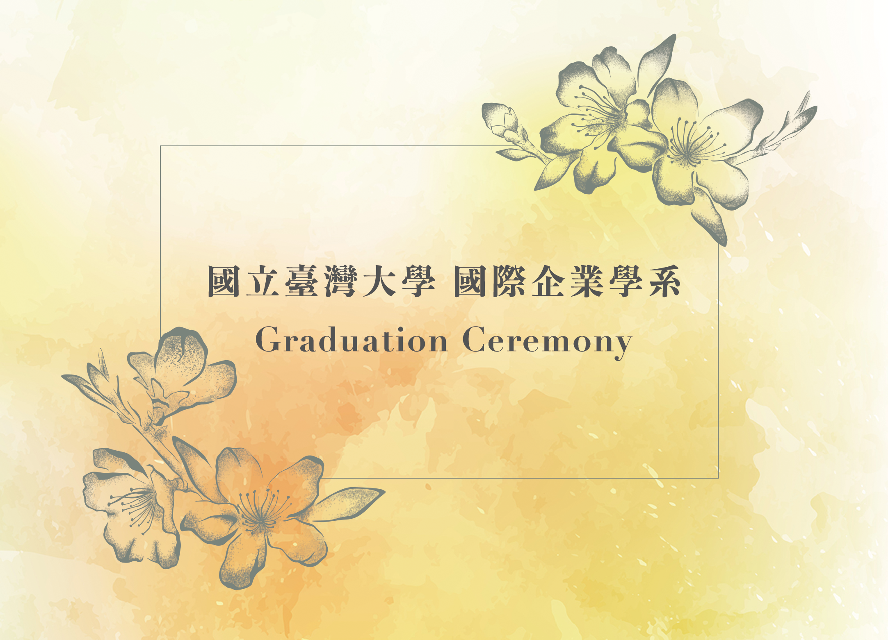

<!DOCTYPE html>
<html lang="zh-TW">

<head>
    <meta charset="UTF-8">
    <meta name="viewport" content="width=device-width, initial-scale=1.0">
    <meta http-equiv="X-UA-Compatible" content="ie=edge">
    <title>羅宇琦的履歷</title>
    <!--引用 CSS-->
    <link rel="stylesheet" href="resume.css">

</head>

<body>
    <!--上面區塊-->
    <div class="A">
        <div class="resume">
            <div class="left">
                <h1>羅宇琦 Yuchi Lo</h1>
                <p>
                    沈靜在自己世界的小眾市場女子，重度巧克力成癮者，
                    <br>目前對於畢業這件事非常焦慮中
                    <p>
                        <hr>
                        <div>
                            <div style="height:10px"></div>
                            <h2>學歷</h2>
                            <ul>
                                <li>國立台灣大學 國際企業學系 學士</li>
                                <li>泰國朱拉隆功大學 交換生</li>
                            </ul>
                        </div>
                        <div>
                            <div style="height: 15px"></div>
                            <h2>專業技能</h2>
                            <table>
                                <tr>
                                    <td></td>
                                    <td></td>
                                    <td></td>
                                </tr>
                                <tr>
                                    <td><b>Photoshop</b></td>
                                    <td style="padding-left: 5px"><b>Illustrator</b></td>
                                    <td style="padding-left: 5px"><b>Lightroom</b></td>
                                </tr>
                            </table>
                        </div>
            </div>
            <div class=" right ">
                <h2>領導經歷</h2>
                <ul>
                    <ul>
                        <li>台大國企系系學會 行銷長</li>
                        <li>2017國企之夜 行銷長</li>
                        <li>第十屆台大管院營 課程長</li>
                    </ul>
                </ul>
                <h2>活動經歷</h2>
                <ul>
                    <ul>
                        <li>Anacoach 泰國教育營隊</li>
                        <li>第二十七屆台大國際商業營 公關專員</li>
                        <li>第二十屆台大國企管理人才營 公關專員</li>
                    </ul>
                </ul>
            </div>
        </div>
    </div>
    <!--下面區塊-->
    <div class="B ">
        <table style="margin-top: 50px">
            <tr>
                <td style="width:300px">
                    <p class="title">Portfolio</p>
                </td>
                <td style="width: 850px">
                    <p class="quote">"I found I could say things with color and shapes that I couldn't say any other way - things I had no words for."</p>
                </td>
            </tr>
        </table>
    </div>
    <div class="C">
        <div class="space"></div>
        <p class="paragraph ">Photoshop 作品</p>
        <div class="bar"></div>
        <div class="pic">
            <div class="lefttext">
                <h2>「蔻丹，是古代美人拿來指染的花。」</h2>
                <div style="height:20px"></div>
                <p>
                    <b>發想過程：</b><br> 此圖是與一間指彩公司合作的贊助貼文。為了要使觀賞者能將目光焦點放在指甲上，因此在構圖時刻意選擇以大量的白色以及偏冷的色調作為主視覺，以襯托主角暗紅色的指彩。此外，在文章故事的設計上也是以指染花蔻丹為發展核心。
                </p>
            </div>
            <div class="rightpic ">
                
            </div>
        </div>
        <div class="pic">
            <div class="leftpic">
                
            </div>
            <div class="righttext">
                <h2>「Reboot! Operation Epoch.」</h2>
                <div style="height:20px"></div>
                <p>
                    <b>發想過程：</b><br> 圖片所欲呈現的情境是在未來世界中，記憶是否會被竄改、人腦是否會被蒙蔽等議題。像模仿電影機器人的橋段，我選擇在原始圖片上蓋上充滿科技感的圖示，並以象徵科技的藍色作為主色調。
                </p>
            </div>
        </div>
        <div class="space"></div>
        <p class="paragraph ">Illustrator 作品</p>
        <div class="bar"></div>
        <div class="pic">
            <div class="lefttext">
                <h2>「百鬼夜行」</h2>
                <div style="height:20px"></div>
                <p>
                    <b>發想過程：</b><br> 為了呈現恐怖片中低解析度的顆粒感，我選擇調整照片的質地，加入雜訊，使畫面更加符合情境。此外字體的選擇也刻意挑選書法字體，使每個細節都能與主題貼合。
                </p>
            </div>
            <div class="rightpic">
                
            </div>
        </div>
        <div class="pic">
            <div class="bigleftpic">
                
            </div>
            <div class="srighttext">
                <h2>台大國企網站banner</h2>
                <div style="height:20px"></div>
                <p>
                    <b>發想過程：</b><br> 試想大學生涯是一趟神秘的宇宙冒險之旅，一切都是那樣的未知、難以捉模，卻又令人嚮往。對我而言，大學就像這張圖一樣色彩斑斕，繽紛地如霓虹一般。
                </p>
            </div>
        </div>
        <div class="pic">
            <div class="lefttext">
                <h2>畢業典禮邀請函</h2>
                <div style="height:60px"></div>
                <p>
                    <b>發想過程：</b><br> 寄送對象為家長以及教授，適合簡單素雅的設計搭配最能代表台灣大學的杜鵑花，再以暖色調作為背景，呈現出畢業典禮溫暖的氛圍。
                </p>
            </div>
            <div class="rightpic">
                
            </div>
        </div>
    </div>
    <div class="D">
        
    </div>
</body>

</html>